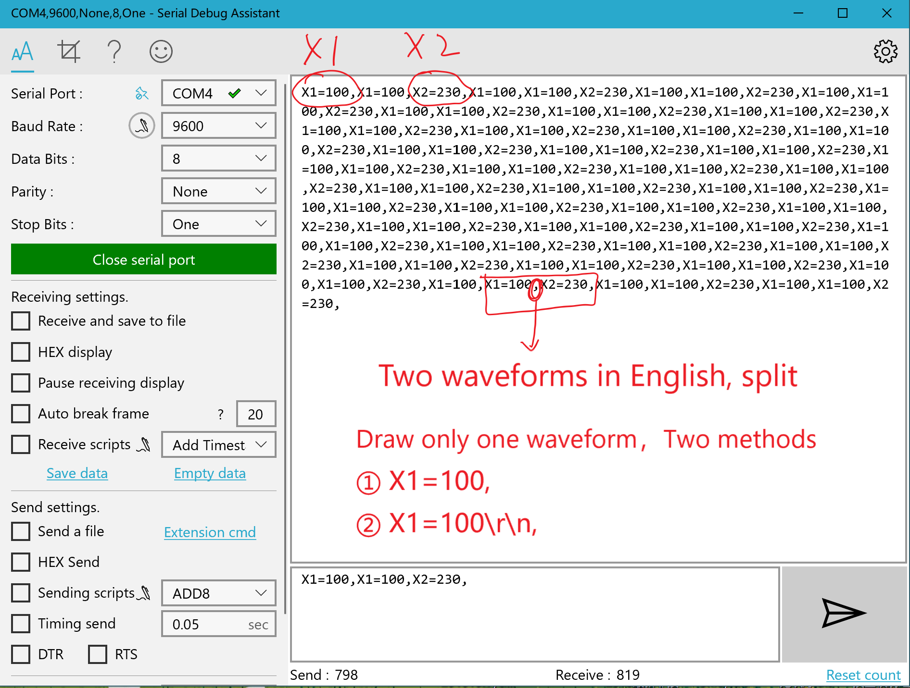

Serial Debug waveform description

- Enter a name for the waveform.
- Select the waveform color.
- Click the Add button.
- The waveform name you just added is displayed in the waveform list.
The X-axis coordinate range 800 indicates that 800 X1 data is received before the X1 is drawn from 0 to 800 bits.
Send waveform data to the PC. Use string format ASCII.
Waveform format
Waveform name Equal value Adorn
X1 = 200 ,
There are two kinds of end symbols in English "," and one is the return change line break "\r\n".
Two waveforms sent together can be split with ",".
Here's the demo. Waveform name Case Sensitive
"X1=100,"
"X1=100\r\n"
"X1=100,X2=200," printf("X1=100,X2=230,");
"X1=100,X2=200\r\n" printf("X1=100,X2=230\r\n");Note "\r\n" is used when using the function to represent a carriage return line break. Software delivery area can be directly pressed into the carriage, you can enter the return line break, not visible but the cursor will move to the next line, you can click on the hexadecimal send will find that the characters will have 16 decimal number 0D 0A.
Download Serial Debug Assistant